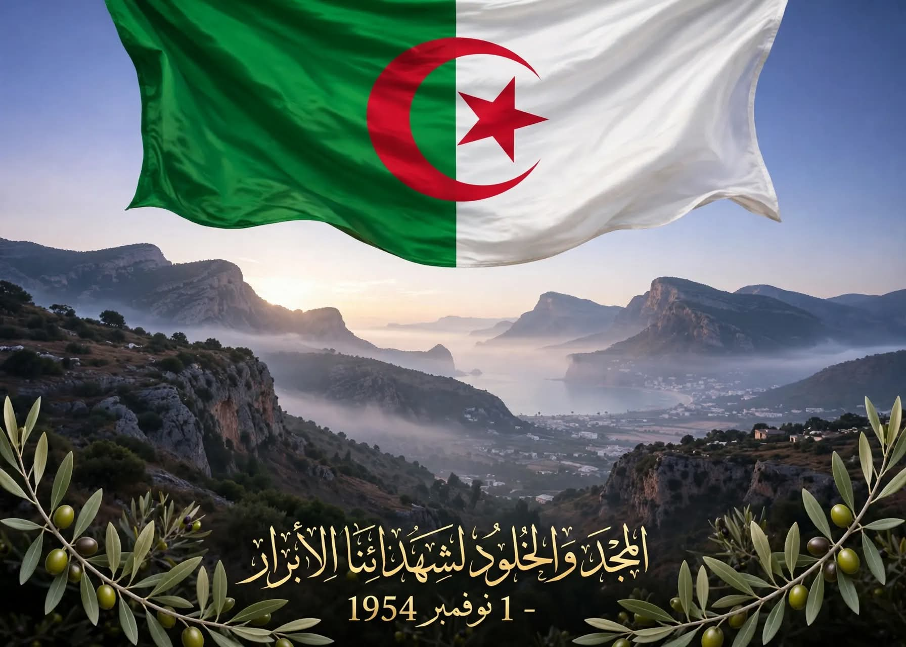

رمز التحدي والصمود في وجه الاستعمار

لكي تعيد إلى ذاكرتك تاريخ سيدي عيسى المجيد، ما عليك إلا أن تشد الرحال إلى دوار الزبيرات. يقع هذا الدوار على بعد 16 كلم شمال شرق سيدي عيسى، غير بعيد عن الطريق الوطني رقم 60، منطقة جبلية حصينة بطبيعتها جعلت منه معقلاً آمناً لتمركز مجاهدي جيش التحرير الوطني.
كان دوار الزبيرات دواراً متمرداً لا يخضع لقوانين المستعمر. ظل وفياً للثورة، يمدها بخيرة أبنائه جيلاً بعد جيل، خاصة بعد مجازر 8 ماي 1945 التي كانت الشرارة الأولى، وصولاً إلى ثورة أول نوفمبر 1954 إلى غاية وقف إطلاق النار في 1962.
هو الشهيد الطيب عبدلي بن طه. ولد يوم 10 ديسمبر 1915 بمنطقة آمرس. ترتيبه الثاني في عائلة كبيرة محافظة متدينة تتكون من 13 فرداً، عائلة معروفة بكرهها الشديد للمستعمر.
نشأ وترعرع في البادية، وتلقى تعليمه الأول في زاوية محمد بن شينون بقرية الزبيرات. لم يسعفه الحظ للالتحاق بالمدارس النظامية، ورغم ذلك كان رجلاً مثقفاً، متديناً، وطنياً غيوراً، رافضاً لكل قوانين فرنسا الظالمة.
في سنة 1948 وبعد نكبة فلسطين إثر وعد بلفور المشؤوم، تأثر الطيب عبدلي كغيره من المسلمين. أراد أن يجسد تضامنه بالفعل، فقرر التوجه إلى فلسطين عبر تونس رفقة مجموعة من رفاقه.
لكن السلطات الفرنسية ألقت القبض عليهم على الحدود وزجت بهم في السجن. بعد أشهر، تمكنوا من الفرار، وأثناء الفرار أصيب الطيب بكسر في رجله. حمله أصدقاؤه إلى بيت عجوز قريبة فاعتنت به وعالجته حتى شفي، ثم غادر نحو مدينة تبسة حيث عمل في أسواقها ليجمع المال.
إلا أن نداء الوطن كان أقوى، وبإلحاح من عائلته عاد إلى مسقط رأسه. لم يطل به المقام، فسافر إلى فرنسا. هناك تعرف على مناضلين وانضم إلى خلية من خلايا حركة انتصار الحريات الديمقراطية، وظل ينشط متنقلاً بين مدن روان وفيشي وغيرها، إلى ما بعد اندلاع الثورة. عاد إلى أرض الوطن سنة 1956 بعد أن انكشف أمره وحكم عليه غيابياً بالإعدام.
بمجرد عودته إلى الزبيرات، اتصل بمجاهدي جيش التحرير أمثال المسعود القصراوي والخيير ويحياوي بن مالك، وبدأ العمل تحت إشراف المسؤول المباشر الهاشمي.
كان يتنقل بين الولاية الثالثة والرابعة والسادسة، من جبل بوكحيل إلى الأوراس، يجمع الأموال والاشتراكات، يزود الثوار باللباس والسلاح، ويشرف على التجنيد، وينقل الرسائل. وبمساعدة إخوته وعلى رأسهم المسعود عبدلي، أشرف على إنشاء مركز بجبال تخصيص لعلاج الجرحى والمرضى من المجاهدين.
شارك في عدة معارك، منها المعركة التي وقعت قرب منطقة النسيسة بجبل آمرس، والتي تكبد فيها الجيش الفرنسي خسائر بشرية كبيرة.
بعد تحريات طويلة ووشاية من الخونة، جاء ذلك اليوم المشؤوم. يروي أحد شهود العيان: كان يوم الخميس 18 ديسمبر، امتلأت سماء الزبيرات بأزيز الطائرات الاستكشافية وضجيج آليات العدو. تمت محاصرة كل مداخل ومخارج الدوار.
قامت القوات بحشد الأهالي حول مسكن صديقه محمد بن الطاهر، واحتجزت 12 فرداً من عائلة الشهيد كرهائن على رأسهم زوجته للضغط عليه لتسليم نفسه، بعد أن فشلت فرنسا أكثر من 7 مرات في اعتقال والده الحاج طه.
كان الطيب عبدلي غير بعيد يراقب ما يحدث. بعد أن أخفى سلاحه ووثائقه، توجه بنفسه إلى مكان حشد الأهالي لإنقاذ عائلته. وما إن وقعت عليه أعين الفرنسيين حتى اعتقلوه وأطلقوا سراح عائلته. جردوه من ثيابه وشرعوا في تعذيبه بأبشع أنواع التعذيب أمام أعين أهل الدوار، وحاولوا إجبار الأهالي على المشاركة لكنهم رفضوا.
ظل الشهيد صابراً صامداً شامخاً كالجبال رغم ساعات التعذيب الطويلة حتى نال شرف الشهادة.
المجد والخلود لشهدائنا الأبرار
تحيا الجزائر